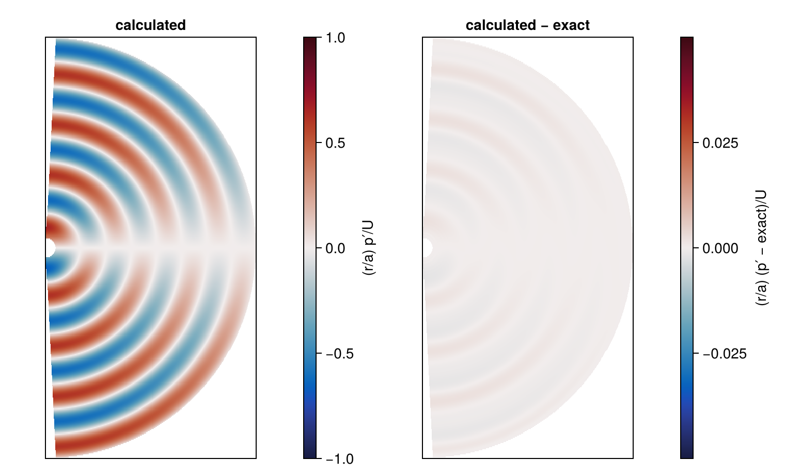
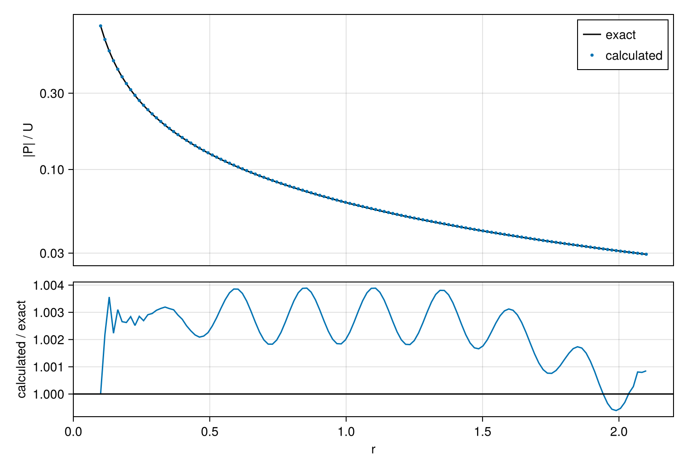
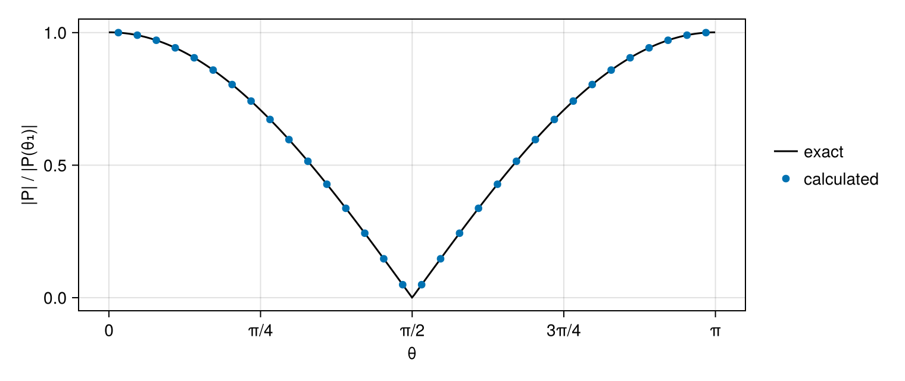

Oscillating sphere
A rigid body that moves back and forth in a gas pushes the gas ahead of it and draws it in behind. The two sides radiate sound of opposite sign, which cancels in the plane across the motion and is strongest along it: a dipole. Curle (1955) showed that a rigid body in a flow at low Mach number radiates as a distribution of dipoles whose strength is the fluctuating force on the body, which is why the tone of a wire in the wind is dipole sound.
A sphere oscillating along a line is the simplest dipole source, and in linear acoustics its field is known exactly. This tutorial radiates sound from such a sphere on a spherical grid resolved in radius and polar angle, and compares the amplitude, the phase and the angular pattern of the wave with the exact field.
using CompactLES # re-exports MPI
MPI.Initialized() || MPI.Init(threadlevel=:funneled)
using CairoMakie
using Printf
CairoMakie.activate!(type = "png")Dipole
The units are dimensionless: the gas at rest has density and sound speed 1, so its pressure is $1/\gamma$ with $\gamma = 1.4$, and the gas constant is $R = 1$. The sphere has radius $a = 0.1$ and moves along the polar axis $\theta = 0$ with velocity $U\cos\omega t$. The wavelength of the sound is $\lambda = 0.5$, so $k = \omega = 2\pi/\lambda$. The amplitude, $U = 10^{-3}$, is small enough for linear acoustics: the sphere moves $U/\omega \approx 10^{-4}$ either way, a thousandth of its radius, so the calculation holds its surface at $r = a$.
The solution of the linear equations that carries sound away from the sphere is, with $\rho_0 = c_0 = 1$,
\[p' = \mathrm{Re}\left\{P(r, \theta)\, e^{-i\omega t}\right\}, \qquad P = A\, h_1(kr) \cos\theta, \qquad \boldsymbol{u} = \mathrm{Re}\left\{\frac{\nabla P}{i\omega}\, e^{-i\omega t}\right\},\]
where $h_1(x) = -e^{ix}(x + i)/x^2$ is the spherical Hankel function of the first kind. The velocity has the components $u_r = \mathrm{Re}\{A h_1'(kr)\cos\theta\, e^{-i\omega t}/i\}$ and $u_\theta = -\mathrm{Re}\{A h_1(kr)\sin\theta\, e^{-i\omega t}/(ikr)\}$. The radial velocity of the gas equals that of the sphere's surface, $U\cos\theta\cos\omega t$, when $A = iU/h_1'(ka)$. The sound is isentropic, so $\rho' = p'/c_0^2 = p'$.
gamma, a = 1.4, 0.1
lambda, U = 0.5, 1e-3
k = 2pi / lambda
h0(x) = -im * cis(x) / x
h1(x) = -cis(x) * (x + im) / x^2
dh1(x) = h0(x) - 2h1(x) / x # h₁′ = h₀ − 2h₁/x
A = im * U / dh1(k * a)
P(r, theta) = A * h1(k * r) * cos(theta)
function dipole(r, theta, t)
e = cis(-k * t)
return (p = real(P(r, theta) * e),
ur = real(A * dh1(k * r) * cos(theta) * e / im),
utheta = -real(A * h1(k * r) * sin(theta) * e / (im * k * r)))
end
function exact(r, theta, t)
d = dipole(r, theta, t)
return Prim(rho = 1 + d.p, p = 1 / gamma + d.p, u = (d.ur, d.utheta, 0.0))
end
@printf("ka = %.3f, |P| on the axis at the sphere %.3f U\n", k * a, abs(P(a, 0.0)) / U)ka = 1.257, |P| on the axis at the sphere 0.792 UThe pattern is $\cos\theta$ at every radius. Far from the sphere, $|h_1(kr)| \to 1/kr$ and the amplitude falls as $1/r$, the spreading of a spherical wave. Where $kr$ is small it falls as $1/r^2$: there the field is that of the gas flowing around the sphere as if it were incompressible. Here $ka = 1.26$, between the two, and at the surface the amplitude falls as $r^{-1.4}$.
Grid
SphericalMetric reads the coordinates as $(r, \theta, \phi)$ and the velocity components as $(u_r, u_\theta, u_\phi)$. The field is symmetric about the polar axis, so $\phi$ is collapsed, as in Supernova remnant, and $u_\phi = 0$. The polar angle is resolved over $(0, \pi)$ with 32 nodes at $\theta_j = (j - \tfrac12)\Delta\theta$, none on the axis. PoleBC, applied at both ends, continues the flow through the axis: with $\phi$ collapsed, the node at $-\theta$ is the one at $\theta$, and $u_\theta$ changes sign across the axis while the density, the pressure and $u_r$ do not.
The radius runs from the sphere to $r = 2.1$, four wavelengths, with 128 nodes, about 32 per wavelength. At the sphere a DirichletBC holds the exact solution, as at the outer boundary of Axis-crossing vortex. At $r = 2.1$ an NSCBCOutflowBC, as in Richtmyer–Meshkov instability, lets the outgoing wave leave and relaxes the pressure toward that of the gas at rest. The initial state is the exact solution at $t = 0$. The numerics are the defaults.
nr, ntheta = 128, 32
problem = Problem(
name = "oscillating sphere",
eos = IdealSpecies("gas"; R = 1.0, gamma = gamma),
metric = SphericalMetric(),
domain = ((a, 2.1), (0.0, pi), (0.0, 1.0)),
bcs = ((DirichletBC((r, theta, phi, t) -> exact(r, theta, t)),
NSCBCOutflowBC(pinf = 1 / gamma)),
(PoleBC(), PoleBC()), PeriodicBC()),
ic = (r, theta, phi) -> exact(r, theta, 0.0),
)
solver, Q = setup(problem, Numerics(n_global = (nr, ntheta, 1)))
report = dt_report(solver, Q)
@printf("dt = %.2e, set by the %s rate along dimension %d at r = %.3f\n",
report.dt, report.kind, report.dim, report.coords[1])dt = 4.16e-03, set by the acoustic rate along dimension 2 at r = 0.100Dimension 2 is $\theta$. At the sphere the polar spacing $a\Delta\theta \approx 0.01$ is smaller than the radial spacing, 0.016, and sets the step.
Run
The run lasts four periods, to $t = 2$. One callback records, every half period, the largest difference between the calculated and the exact pressure at any node. Another samples the pressure at $N = 32$ times $t_n$ spread evenly over the last period and accumulates the complex amplitude at each node,
\[\hat{P} = \frac{2}{N}\sum_{n=1}^{N} p'(t_n)\, e^{i\omega t_n},\]
which for a field oscillating at $\omega$ is the $P$ of the exact solution: its magnitude is the amplitude of the wave and its argument the phase. field_snapshot returns the fields at every node with the node coordinates.
history = (t = Float64[], error = Float64[])
record = Callback(EveryTime(lambda / 2), function (solver, Q)
snap = field_snapshot(solver, Q; fields = (:p,))
r, theta = snap.coords[1], snap.coords[2]
e = maximum(abs(snap[:p][i, j, 1] - 1 / gamma - dipole(r[i], theta[j], solver.t).p)
for i in eachindex(r), j in eachindex(theta))
push!(history.t, solver.t)
push!(history.error, e)
nothing
end)
N = 32
sample_times = [2.0 - lambda + n * lambda / N for n in 1:N]
Phat = zeros(ComplexF64, nr, ntheta)
sample = Callback(AtTime(sample_times), function (solver, Q)
snap = field_snapshot(solver, Q; fields = (:p,))
Phat .+= (2 / N) .* (snap[:p][:, :, 1] .- 1 / gamma) .* cis(k * solver.t)
nothing
end)
run!(solver, Q; tfinal = 2.0, nmax = 10_000, callback = (record, sample))
@printf("%d steps to t = %.1f\n", solver.step, solver.t)494 steps to t = 2.0Field
The meridian $(r, \theta)$ at $t = 2$, drawn with the polar axis vertical. field_slice returns the pressure on the nodes of the plane with their coordinates, and cartesian_slice resamples it onto a Cartesian raster. The pressure is multiplied by $r/a$, which removes the $1/r$ decay of the far field so that the wave fronts appear with the same strength at every radius.
r, theta, p = field_slice(solver, Q, :p)
scaled = [r[i] / a * (p[i, j] - 1 / gamma) / U
for i in eachindex(r), j in eachindex(theta)]
difference = [r[i] / a * (p[i, j] - 1 / gamma - dipole(r[i], theta[j], solver.t).p) / U
for i in eachindex(r), j in eachindex(theta)]
X, Y, field_raster = cartesian_slice(solver, (1, 2), r, theta, scaled)
_, _, difference_raster = cartesian_slice(solver, (1, 2), r, theta, difference)
fig = Figure(size = (760, 460))
ax1 = Axis(fig[1, 1], aspect = DataAspect(), title = "calculated")
ax2 = Axis(fig[1, 3], aspect = DataAspect(), title = "calculated − exact")
heatmap!(ax1, X, Y, field_raster; colorrange = (-1, 1), colormap = :balance)
heatmap!(ax2, X, Y, difference_raster; colorrange = (-0.05, 0.05), colormap = :balance)
for ax in (ax1, ax2)
limits!(ax, 0, 2.1, -2.1, 2.1)
hidedecorations!(ax)
end
Colorbar(fig[1, 2], limits = (-1, 1), colormap = :balance, label = "(r/a) p′/U")
Colorbar(fig[1, 4], limits = (-0.05, 0.05), colormap = :balance,
label = "(r/a) (p′ − exact)/U")
fig
The wave fronts are spheres centered on the sphere, with crests a wavelength apart. The pressure is opposite in sign above and below the equator, where it vanishes. The difference from the exact field, on a scale twenty times finer, is also opposite in sign across the equator and vanishes there.
Amplitude
Along the line of nodes nearest the polar axis, $\theta_1 = \Delta\theta/2$, the amplitude $|\hat{P}|$ against the radius, and below it the ratio to the exact amplitude:
j = 1
exact_amplitude = abs.(P.(r, theta[j]))
ratio = abs.(Phat[:, j]) ./ exact_amplitude
fig = Figure(size = (760, 520))
ax1 = Axis(fig[1, 1], yscale = log10, ylabel = "|P| / U",
yticks = [0.03, 0.1, 0.3, 1])
ax2 = Axis(fig[2, 1], xlabel = "r", ylabel = "calculated / exact")
lines!(ax1, r, exact_amplitude ./ U, color = :black, label = "exact")
scatter!(ax1, r, abs.(Phat[:, j]) ./ U, color = Makie.wong_colors()[1], markersize = 5,
label = "calculated")
lines!(ax2, r, ratio, color = Makie.wong_colors()[1])
hlines!(ax2, [1.0], color = :black)
axislegend(ax1, position = :rt)
hidexdecorations!(ax1, grid = false)
linkxaxes!(ax1, ax2)
rowsize!(fig.layout, 2, Relative(0.35))
fig
@printf("amplitude / exact on the line nearest the axis: %.3f to %.3f\n", extrema(ratio)...)
@printf("phase − exact: %+.3f to %+.3f rad\n",
extrema(angle.(Phat[:, j] ./ P.(r, theta[j])))...)amplitude / exact on the line nearest the axis: 0.999 to 1.004
phase − exact: -0.003 to +0.001 radThe amplitude follows the exact one from the sphere to the outer boundary, within 0.4% at every radius, and the phase to within a few thousandths of a radian.
A wave that reaches the outflow face is partly reflected unless the face lets it leave unchanged. The characteristic analysis of the face treats the wave as plane, and a spherical wave departs from a plane one by a relative amount of order $1/kr$. A face that ignored the difference would reflect $1/(2kr)$ of the wave, 2% here, and the amplitude would ripple about the exact one with a period of half a wavelength. On the outer radial face of a spherical or cylindrical grid, NSCBCOutflowBC carries the curvature term of the radiation condition of Bayliss and Turkel (1980), which leaves a reflection of order $1/(kr)^2$, a tenth of a percent at $r = 2.1$.
The remaining 0.4% is the resolution at the sphere, whose radius spans six radial spacings: holding the exact solution at the outer boundary leaves the ratio the same, and with 64 radial nodes instead of 128 the radiated amplitude is 2% high.
Pattern
On the ring of nodes nearest $r = 1$, the amplitude against the polar angle, normalized by its value nearest the axis, with the $|\cos\theta|$ of the exact field:
i = argmin(abs.(r .- 1.0))
pattern = abs.(Phat[i, :]) ./ abs(Phat[i, 1])
fig = Figure(size = (760, 320))
ax = Axis(fig[1, 1], xlabel = "θ", ylabel = "|P| / |P(θ₁)|",
xticks = ([0, pi / 4, pi / 2, 3pi / 4, pi], ["0", "π/4", "π/2", "3π/4", "π"]))
lines!(ax, 0:0.01:pi, abs.(cos.(0:0.01:pi)) ./ cos(theta[1]), color = :black,
label = "exact")
scatter!(ax, theta, pattern, color = Makie.wong_colors()[1], label = "calculated")
Legend(fig[1, 2], ax, framevisible = false)
fig
@printf("r = %.3f: largest departure from |cos θ| / cos θ₁ %.1e\n", r[i],
maximum(abs.(pattern .- abs.(cos.(theta)) ./ cos(theta[1]))))r = 0.998: largest departure from |cos θ| / cos θ₁ 2.0e-06The pattern is $|\cos\theta|$ to a few parts in a million, at the axis and at the equator alike: the errors in amplitude and phase above are the same at every angle. With 16 or 64 polar nodes instead of 32, the ratio to the exact amplitude along the axis does not change.
Start
The initial state is the exact, time-periodic solution, so any difference from it grows from zero. The largest difference in pressure at any node, in units of $U$:
println(" t max |p′ − exact| / U")
for (t, e) in zip(history.t, history.error)
@printf("%5.2f %12.1e\n", t, e / U)
end t max |p′ − exact| / U
0.00 2.8e-13
0.25 8.2e-04
0.50 1.0e-03
0.75 1.0e-03
1.00 1.0e-03
1.25 1.0e-03
1.50 1.0e-03
1.75 1.0e-03
2.00 8.9e-04The difference appears first next to the sphere and settles by $t = 0.5$ near $10^{-3}\,U$, the value it reaches with the exact solution held at the outer boundary as well.
At ten times and at a tenth of the amplitude of the motion, the ratios to the exact amplitude are the same to three digits. Turning off the artificial properties and the filter changes them by at most 0.3%.
What this checks
- A sphere oscillating on a grid resolved in radius and polar angle radiates the dipole field: along the axis the amplitude is within 0.4% of the exact one at every radius, and the pattern is $|\cos\theta|$.
- The pole condition carries the field through the polar axis without disturbing the pattern there.
- A
DirichletBCgiven a function of position and time drives the wave at the sphere. - A characteristic outflow condition at the outer radius of a spherical grid lets the spherical wave leave, reflecting about a tenth of a percent of it.
This page was generated using Literate.jl.